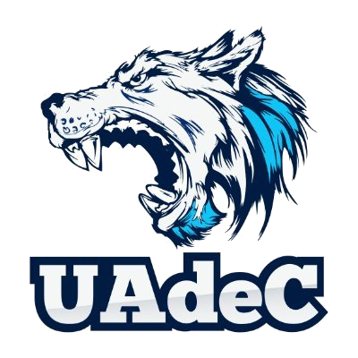
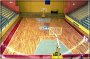

CNMB
| Escudo |
|---|
|  |
| Datos |
| Nombre: Lobos de la UADC Anio de Fundación: 1996 Ciudad: Saltillo, Coahuila Estadio: Gimnasio Nazario Ortiz Garza Capacidad: 4,000 Sitio web: http://www.lobosuadec.com/ |
| Historia |
|
En 1998 se creó el equipo de Basket Ball Profesional Saltillense Osos, por la empresa Asistencia y Deporte de Saltillo A.C. y en el año 2000, la Universidad Autónoma de Coahuila ofreció su apoyo a dicho equipo con el fin de representar el basket ball profesional por medio de esta institución de enseñanza, así es como surgió el equipo Lobos de la U a de C, Esta formado por la Promotora Saltillense del Deporte A.C, Llego a tener dos Copas Independencia en los años de 2004 y 2005, el equipo desaparece a la siguiente temporada moviéndose a la ciudad de Tampico en Tamaulipas. |
| Estadio |
|  |